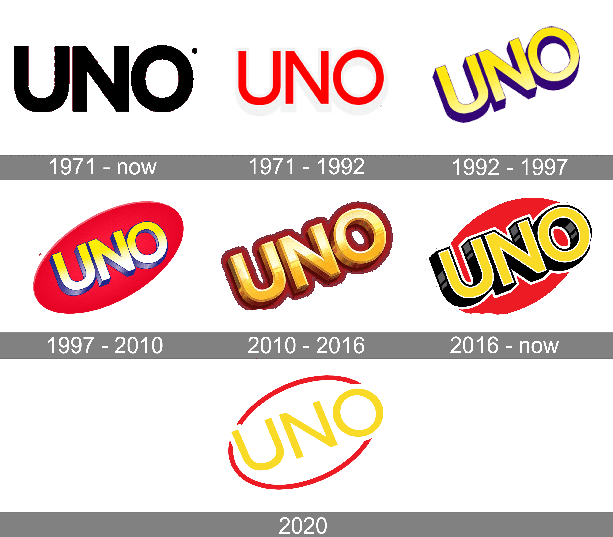
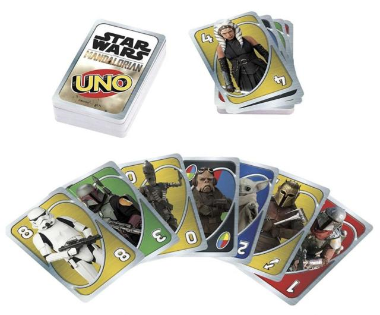
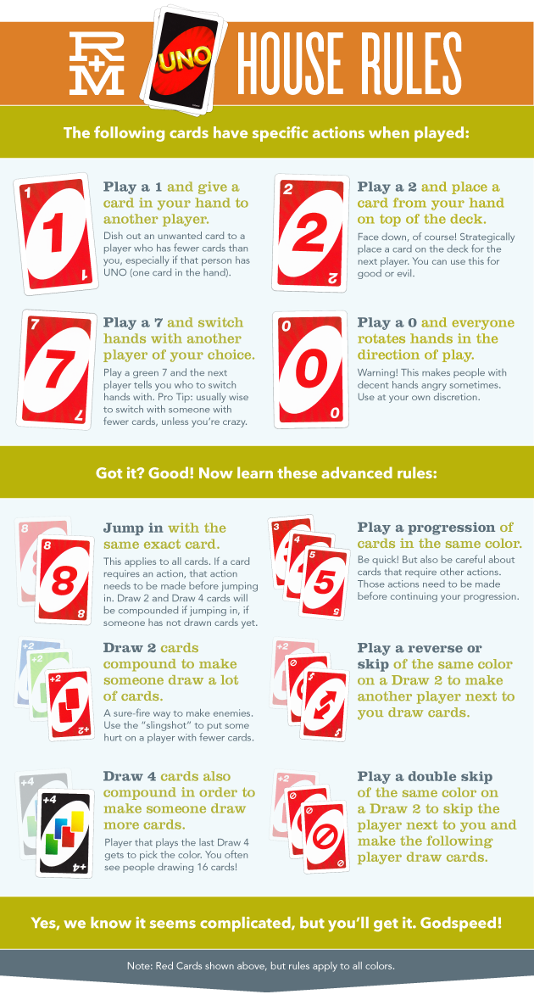

5 Fun Facts About UNO!
Adam Sharifeh
Uno is a card game loved by all and is one of the most iconic card games of all time. This game has brought joy, anger, satisfaction, and even friendship endings but people still enjoy the game for how fun it is. However, there's more to the game than you think. It's had quite an interesting history and fact that people will find interesting.
1.The game is much older than you think
The game was first made in 1971 by an American barber named Merle Robbins. This means this game is almost a century year old.
2.Merle Robbins sold the game for $50,000.

This games was made a man named Merle Robbins and he sold this game for $50,000 which may not be a lot of money to this day. It's still a lot for an average person especially since this is a card game and that $50,000 was a huge deal in the past.
3.Uno has sold in many countries.

UNO has sold in over 80 countries around the world
4.Other characters are in the game.
The game has gotten so popular over the years that other characters such as Mario, Star Wars characters, Harry Potter, and Minions made an appearance.
5.The game has evolved a lot over the years.
As time went by, this game had a lot of new mechanics and gimmicks to make the game more intense. Whether it's playing a 7 to take someone's hand, immediately playing the same card your opponent played when it's not your turn, or even challenging someone that plays the infamous 4+card on you to make them draw 4 instead. It has made the game more interesting than when it was first invented.
Conclusion
This game has brought a lot of entertainment to a lot of people. We may end up saying or doing things we don't mean but that's just how games are. This game is available for mobile and PC and they're high quality in the end.